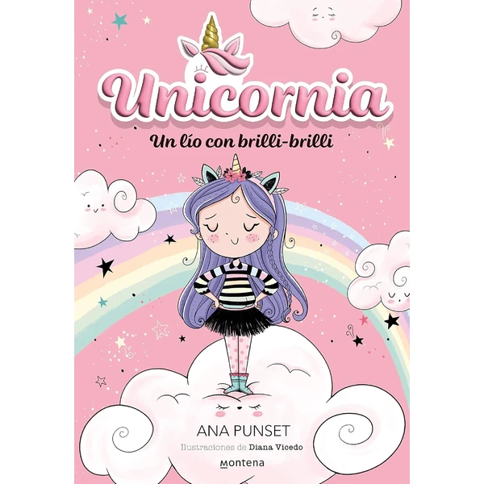
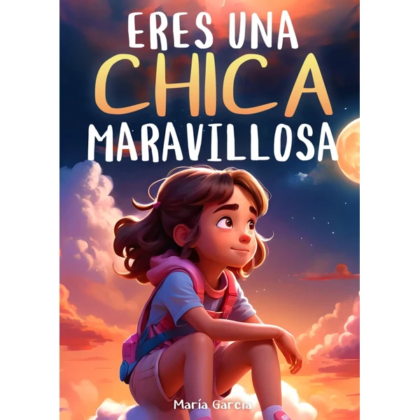
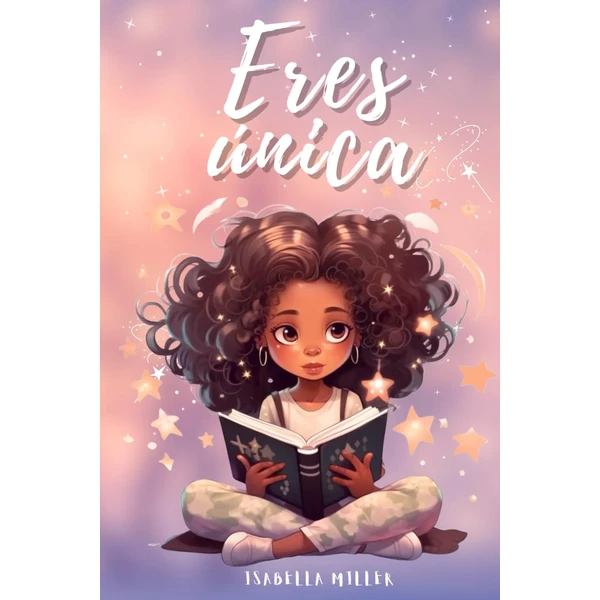
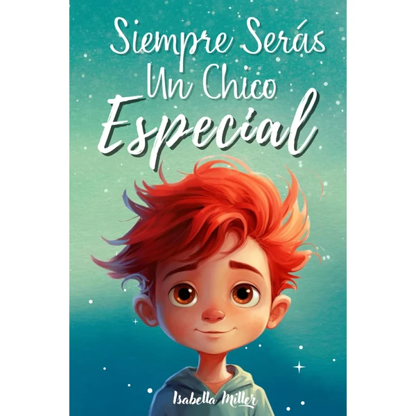
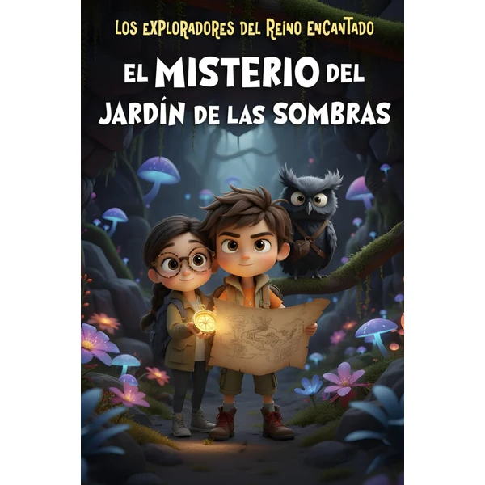
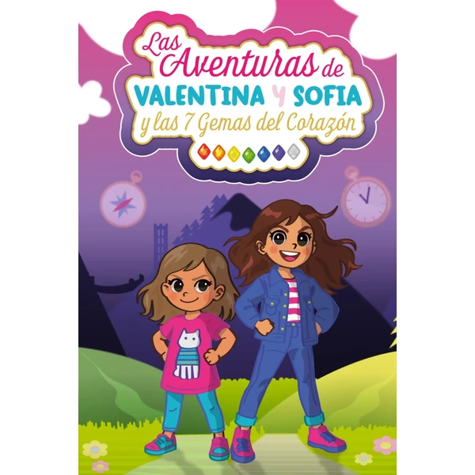

Eres un Chico Fantástico
Una colección de historias inspiradoras sobre el valor, la fuerza interior y la confianza en sí mismo. Cada relato motiva a los niños a creer en sus propias capacidades y a enfrentar desafíos con seguridad.
⭐ ¿Por qué nos gusta?
- ✔ Historias que refuerzan la autoestima del niño.
- ✔ Mensajes de valor y confianza en sí mismo.
- ✔ Ideal para iniciar conversaciones sobre emociones.
💬 Lo que más destacan las familias
Muchos padres coinciden en que las historias abren la puerta a hablar de emociones sin que resulte forzado, algo que agradecen especialmente a esta edad. También se comenta que los niños piden repetir algunos relatos porque se sienten identificados con ellos.
Ver en Amazon

Naciste para Brillar
Un libro inspirador especialmente dirigido a niñas para potenciar su autoestima y confianza. Transmite mensajes positivos sobre la singularidad de cada persona y el valor de creer en uno mismo.
⭐ ¿Por qué nos gusta?
- ✔ Mensaje empoderante para niñas a partir de 6 años.
- ✔ Ilustraciones coloridas y atractivas.
- ✔ Promueve la confianza en las propias capacidades.
💬 Lo que más destacan las familias
Los compradores valoran especialmente que el mensaje llegue de forma sencilla y cercana, sin sonar a sermón. También se comenta que las niñas disfrutan viéndose reflejadas en las páginas, lo que refuerza la idea de que cada una es especial a su manera.
Ver en Amazon

Unicornia 1: Un Lío con Brilli-Brilli
Una aventura mágica en el universo Unicornia con una cubierta especial que brilla con purpurina. Perfecto para lectores que buscan historias fantásticas llenas de magia, humor y personajes encantadores.
⭐ ¿Por qué nos gusta?
- ✔ Cubierta mágica con purpurina brillante.
- ✔ Historias fantásticas y divertidas.
- ✔ Personajes memorables y encantadores.
💬 Lo que más destacan las familias
Una de las cosas más comentadas es lo mucho que engancha la portada con purpurina, que suele ser lo primero que llama la atención antes incluso de abrir el libro. También se valora que la historia combine magia y humor de una forma que hace pedir el siguiente título de la saga.
Ver en Amazon

Eres una Chica Maravillosa
Historias inspiradoras sobre el valor, la fuerza interior y la confianza en sí misma, especialmente pensadas para niñas. Cada relato muestra a personajes femeninos enfrentando retos y descubriendo su poder interior.
⭐ ¿Por qué nos gusta?
- ✔ Personajes femeninos empoderados como modelos.
- ✔ Mensaje de fuerza interior y valentía.
- ✔ Ideales para conversar sobre las propias fortalezas.
💬 Lo que más destacan las familias
Se repite bastante el comentario de que las protagonistas se convierten en un referente con el que las niñas se identifican fácilmente. También gusta que cada historia deje una reflexión sencilla sobre la valentía, sin resultar aburrida ni moralizante.
Ver en Amazon

Eres Única, No Hay Nadie Como Tú
Un libro motivacional dedicado a potenciar la autoestima de las niñas a partir de 6 años. Celebra la unicidad de cada persona y transmite el mensaje de que cada niña es especial y valiosa tal como es.
⭐ ¿Por qué nos gusta?
- ✔ Mensaje claro sobre la propia singularidad.
- ✔ Especialmente orientado hacia niñas.
- ✔ Lectura que fortalece la autoestima.
💬 Lo que más destacan las familias
Entre los comentarios más habituales aparece que el mensaje cala rápido porque está contado de forma clara y directa, sin rodeos. Las familias también comentan que da pie a conversaciones bonitas sobre lo que hace especial a cada niña.
Ver en Amazon

Siempre Serás un Chico Especial
Un libro inspirador que habla sobre la confianza, el coraje y los valores esenciales. Diseñado para potenciar la autoestima de los niños y ayudarles a reconocer sus propias cualidades especiales.
⭐ ¿Por qué nos gusta?
- ✔ Enfoque en valores universales positivos.
- ✔ Mensajes sobre confianza y coraje.
- ✔ Apropiado para potenciar la autoestima infantil.
💬 Lo que más destacan las familias
Quienes lo han leído con sus hijos destacan que las historias ayudan a poner nombre a valores como el coraje o la confianza de una forma que los niños entienden bien. También se comenta que resulta un buen punto de partida para hablar de sus propias cualidades.
Ver en Amazon

Los Exploradores del Reino Encantado
Una aventura de misterio y magia en un reino fantástico. Perfecto para lectores que disfrutan de historias con giros inesperados, personajes aventureros y mundos imaginarios llenos de sorpresas.
⭐ ¿Por qué nos gusta?
- ✔ Aventura emocionante con elementos de misterio.
- ✔ Mundo fantástico creativo y envolvente.
- ✔ Protagonistas aventureros para emular.
💬 Lo que más destacan las familias
No es raro encontrar comentarios sobre lo bien que engancha la trama de misterio, con giros que mantienen la curiosidad hasta el final. También se valora que el mundo fantástico esté lleno de detalles que invitan a imaginar mientras se lee.
Ver en Amazon

Las Aventuras de Valentina y Sofía
Una aventura mágica donde Valentina y Sofía buscan las 7 gemas del corazón. Un viaje lleno de amistad, valentía y descubrimiento personal en un mundo de fantasía.
⭐ ¿Por qué nos gusta?
- ✔ Aventura basada en la amistad y el trabajo en equipo.
- ✔ Búsqueda de gemas mágicas como hilo conductor.
- ✔ Personajes femeninos como protagonistas.
💬 Lo que más destacan las familias
Un detalle que aparece una y otra vez es lo bien que refleja el valor de la amistad a través de la búsqueda de las gemas, algo que mantiene enganchados a los lectores capítulo tras capítulo. También gusta que las protagonistas resuelvan los retos juntas, en vez de depender de un solo personaje.
Ver en Amazon